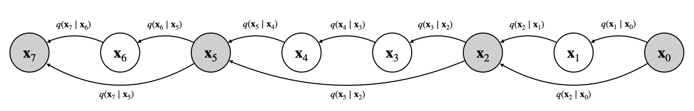
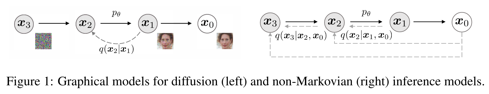
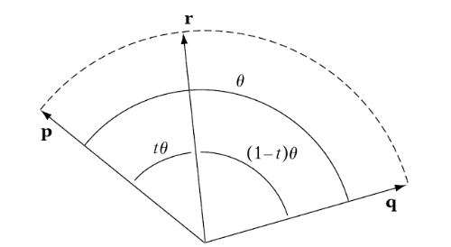

扩散模型理论·DDIM与加速采样
\[ \newcommand{\x}{\mathbf x} \newcommand{\I}{\mathbf I} \newcommand{\calN}{\mathcal N} \newcommand{\E}{\mathbb E} \]
DDPM Recap
前向过程
设有一列 noise schedule：\(\{\beta_t\}_{t=1}^T\)，记 \(\alpha_t=1-\beta_t\)，\(\bar\alpha_t=\prod_{i=1}^t\alpha_i\). 定义一个向输入逐渐添加噪声的马尔可夫过程如下： \[ q(\x_t\vert \x_{t-1})=\calN(\x_t;\sqrt{1-\beta_t}\x_{t-1},\beta_t \I) \tag{1}\label{ddpm-forward} \] 则可以推得从输入到任意一步加噪的转移概率分布为： \[ q(\x_t\vert \x_0)=\calN\left(\x_t;\sqrt{\bar\alpha_t}\x_0,(1-\bar\alpha_t)\I\right) \tag{2}\label{ddpm-forward0} \] 也就是说我们可以用 \(\x_0\) 和一个高斯随机变量 \(\epsilon\) 的线性组合来表达 \(\x_t\)： \[ \x_t=\sqrt{\bar\alpha_t}\x_0+\sqrt{1-\bar\alpha_t}\epsilon,\quad \epsilon\sim\calN(\mathbf0,\I) \] 逆向过程
在给定 \(\x_0\) 的条件下，从 \(\x_{t}\) 生成 \(\x_{t-1}\) 的概率分布为： \[ \begin{align} &q(\x_{t-1}\vert\x_t,\x_0)=\calN\left(\x_{t-1};\ {\mu_t(\x_t,\x_0)},{\tilde\beta_t}\I\right)\\ \text{where}\quad&\mu_t(\x_t,\x_0)=\frac{\sqrt{\alpha_t}(1-\bar\alpha_{t-1})}{1-\bar\alpha_t}\x_t+\frac{\sqrt{\bar\alpha_{t-1}}\beta_t}{1-\bar\alpha_t}\x_0\\ &\tilde\beta_t=\frac{1-\bar\alpha_{t-1}}{1-\bar\alpha_t}\beta_t\\ \end{align}\tag{3}\label{ddpm-reverse} \] 但由于 \(\x_0\) 实际未知，我们用 \(p_\theta(\x_{t-1}\vert \x_t)\) 去近似 \(q(\x_{t-1}\vert \x_t,\x_0)\)： \[ p_\theta(\x_{t-1}\vert \x_t)=\calN(\x_{t-1};\ \mu_\theta(\x_t,t),\sigma_t^2\I) \] 其中均值 \(\mu_\theta(\x_t,t)\) 参数化为： \[ \mu_\theta(\x_t,t)=\frac{1}{\sqrt{\alpha_t}}\left(\x_t-\frac{1-\alpha_t}{\sqrt{1-\bar\alpha_t}}\epsilon_\theta(\x_t,t)\right) \] 方差可以选择为 \(\sigma_t^2=\tilde\beta_t\) 或 \(\sigma_t^2=\beta_t\).
损失函数
与 VAE 类似，我们优化 ELBO： \[ \max_\theta\quad\text{ELBO}=\E_{\x_{1:T}\sim q(\x_{1:T}\vert \x_0)}\left[\log p(\x_T)+\sum_{t=1}^T\log\frac{p_\theta(\x_{t-1}\vert\x_t)}{q(\x_t\vert \x_{t-1})}\right] \] 该式可以变换为： \[ \min_\theta\quad -\E_{\x_1\sim q(\x_1\vert\x_0)}[\log p_\theta(\x_0\vert\x_1)]+ \sum_{t=2}^T\E_{\x_t\sim q(\x_t\vert\x_0)}\left[\text{KL}(q(\x_{t-1}\vert\x_t,\x_0)\|p_\theta(\x_{t-1}\vert\x_t))\right] \] 代入 \(q(\x_{t-1}\vert\x_t,\x_0)\) 和 \(p_\theta(\x_{t-1}\vert \x_t)\)，并简化系数，可得最终损失函数： \[ \mathcal L_\text{simple}=\E_{t,\x_0,\epsilon}\left[\left\|\epsilon-\epsilon_\theta\left(\sqrt{\bar\alpha_t}\x_0+\sqrt{1-\bar\alpha_t}\epsilon,t\right) \right\|^2\right] \tag{4}\label{ddpm-loss} \]
Respaced Timesteps
在 Improved DDPM[1]中，作者阐述了一种直接简便的加速采样方法，即不要一步一步地走逆向过程，而是跳着走。受益于 DDPM 前向过程的特殊构造，运用从 \(\eqref{ddpm-forward}\) 式推导出 \(\eqref{ddpm-forward0}\) 式的思想，我们能轻松地导出任意两个 timesteps 之间的转移概率： \[ q(\x_t\vert \x_s)=\calN\left(\x_t;\ \sqrt{\frac{\bar\alpha_t}{\bar\alpha_s}}\x_s,\left(1-\frac{\bar\alpha_t}{\bar\alpha_s}\right)\I\right),\quad \quad 0\leq s<t\leq T \] 因此，我们可以选取一个子序列 \(0=\tau_0<\tau_1<\cdots<\tau_K=N\)，构建一个新的 \(K\) 步马尔可夫链： \[ q(\x_{\tau_i}\vert \x_{\tau_{i-1}})=\calN\left(\x_{\tau_i};\ \sqrt{\frac{\bar\alpha_{\tau_i}}{\bar\alpha_{\tau_{i-1}}}}\x_{\tau_{i-1}},\left(1-\frac{\bar\alpha_{\tau_i}}{\bar\alpha_{\tau_{i-1}}}\right)\I\right),\quad 1\leq i\leq K\tag{5}\label{skip} \] 
由于新马尔可夫链更短（\(K<N\)），所以在其上采样即可达到加速采样的目的。另外，由于新马尔可夫链是原马尔可夫链的一个子序列，原来的训练本就包括了对子序列的训练，所以我们可以直接加载训练好的 DDPM 模型。
对比 \(\eqref{skip}\) 式与 \(\eqref{ddpm-forward}\) 式，容易知道新马尔可夫链对应的 \(\beta\) 序列为： \[ {\color{purple}\beta_{\tau_i}}=1-\frac{\bar\alpha_{\tau_i}}{\bar\alpha_{\tau_{i-1}}},\quad i=1,2,\ldots ,K \] 为与原来的 \(\beta\) 作区分，这里用紫色来表示新的 \(\color{purple}{\beta}\). 以新的 \(\color{purple}{\beta}\) 为基础，重新定义一套新的参数： \[ \begin{align} &{\color{purple}{\alpha_{\tau_i}}}=1-{\color{purple}{\beta_{\tau_i}}}\\ &{\color{purple}{\bar\alpha_{\tau_i}}}=\prod_{j=1}^i{\color{purple}{\alpha_{\tau_j}}}\\ &{\color{purple}{\tilde\beta_{\tau_i}}}=\frac{1-{\color{purple}\bar\alpha_{\tau_{i-1}}}}{1-{\color{purple}\bar\alpha_{\tau_i}}}{\color{purple}\beta_{\tau_i}} \end{align} \] 那么原来的所有结论在新的参数下都适用。（其实 \(\color{purple}{\bar\alpha}\) 和 \(\bar\alpha\) 是一样的，毕竟新的 \(\color{purple}{\beta}\) 就是用 \(\bar\alpha\) 定义出来的。换句话说，\(\bar\alpha\) 才是决定扩散过程的最本质的参数。）
在具体实现上，我们有两种方案：
第一种方案是 Improved DDPM GitHub repo 所采用的。我们继承原来的 DDPM 类，更新 \(\beta\) 序列为新的 \(\color{purple}{\beta}\) 序列并重新初始化其他参数，就可以直接调用原本 DDPM 的方法了。值得注意的一点是，给到模型的 timestep 要映射回原来的 timestep，见 repo 中的
_WrappedModel类。第二种方案是 DDIM GitHub repo 所采用的，更加简单粗暴，即直接在采样时重新计算 \(\beta\) 等参数。
DDIM
Idea
在 DDPM 中，我们先定义了 \(q(\x_t\vert\x_{t-1})\)，然后推导出 \(q(\x_t\vert \x_0)\)，最后利用贝叶斯公式推导出 \(q(\x_{t-1}\vert \x_t,\x_0)\)： \[ q(\x_{t-1}\vert \x_t,\x_0)=\frac{q(\x_t\vert\x_{t-1},\x_0)q(\x_{t-1}\vert\x_0)}{q(\x_t\vert\x_0)} \] 论文[2]的作者敏锐地发现，DDPM 的损失函数和采样过程只依赖于 \(q(\x_t\vert\x_0)\) 和 \(q(\x_{t-1}\vert\x_t,\x_0)\)，与 \(q(\x_t\vert\x_{t-1})\) 无关。因此，虽然 \(q(\x_t\vert\x_{t-1})\) 是一切的根源，但是它最后并没有直接发挥作用。于是我们大胆地猜想——能否不从 \(q(\x_t\vert\x_{t-1})\) 出发，而是直接定义 \(q(\x_t\vert \x_0)\) 和 \(q(\x_{t-1}\vert \x_t,\x_0)\) 呢？
首先，为了与 DDPM 对齐，保持 \(q(\x_t\vert\x_0)\) 不变： \[ q(\x_t\vert\x_0)=\calN\left(\x_t;\ \sqrt{\bar\alpha_t}\x_0,(1-\bar\alpha_t)\I\right)\label{xtx0}\tag{6} \] 其次，考虑 \(q(\x_{t-1}\vert \x_t,\x_0)\)，我们发现仅从已定义的 \(q(\x_t\vert \x_0)\) 是无法唯一确定下 \(q(\x_{t-1}\vert \x_t,\x_0)\) 的（无视掉 \(\x_0\) 的条件能看得更明显），只要它们俩满足以下关系式就行： \[ q(\x_{t-1}\vert \x_0)=\int q(\x_{t-1}\vert \x_t,\x_0)q(\x_t\vert \x_0)\mathrm d\x_t \]
论文给出的一族满足条件的解是： \[ q_\sigma(\x_{t-1}\vert\x_t,\x_0)=\calN\left(\x_{t-1};\ \sqrt{\bar\alpha_{t-1}}\x_0+\sqrt{1-\bar\alpha_{t-1}-\sigma_t^2}\cdot\frac{\x_t-\sqrt{\bar\alpha_t}\x_0}{\sqrt{1-\bar\alpha_t}},\sigma_t^2\I \right)\tag{7}\label{ddim-reverse} \] 这里给 \(q\) 加上了下标 \(\sigma=(\sigma_1,\ldots,\sigma_T)\) 来明确地表示 \(q\) 是关于 \(\sigma\) 的一族解，改变 \(\sigma\) 就能改变 \(q\).
论文的发展顺序是先直接给出了 \(q_\sigma(\x_{t-1}\vert\x_t,\x_0)\)，然后用数学归纳法证明 \(q(\x_t\vert \x_0)\) 满足我们的定义。按这样的顺序写论文比较方便，但显然与人的正常思考过程相反，不具有参考意义。参考资料[3]使用了待定系数法求解 \(q_\sigma(\x_{t-1}\vert\x_t,\x_0)\)，是一个不错的方案。
根据 \(\eqref{xtx0},\eqref{ddim-reverse}\) 式，我们从不同于 DDPM 的角度定义了一个新的扩散/去噪过程。特别地，我们回过来算一下这个新扩散过程的一个前向步是什么： \[ q_\sigma(\x_t\vert\x_{t-1},\x_0)=\frac{q_\sigma(\x_{t-1}\vert\x_t,\x_0)q(\x_t\vert\x_0)}{q(\x_{t-1}\vert\x_0)} \] 其具体形式不重要，重要的是现在 \(\x_t\) 同时依赖于 \(\x_{t-1}\) 和 \(\x_0\)，所以不再是一个马尔可夫过程了，如下图所示：

在实际采样时，我们依旧用 \(p_{\theta,\sigma}(\x_{t-1}\vert \x_t)\) 去近似 \(q_\sigma(\x_{t-1}\vert\x_t,\x_0)\)： \[ \begin{align} &p_{\theta,\sigma}(\x_{t-1}\vert \x_t)=\calN\left(\x_{t-1};\sqrt{\bar\alpha_{t-1}}\ \x_\theta(\x_t,t)+\sqrt{1-\bar\alpha_{t-1}-\sigma_t^2}\cdot\epsilon_\theta(\x_t,t),\sigma_t^2\mathbf I\right)\\ \text{where}\quad&\x_\theta(\x_t,t)\xrightarrow{\text{approximates}}\x_0\\ &\epsilon_\theta(\x_t,t)\xrightarrow{\text{approximates}}\epsilon=\frac{\x_t-\sqrt{\bar\alpha_t}\x_0}{\sqrt{1-\bar\alpha_t}} \end{align} \]
虽然 DDIM 与 DDPM 的 \(q_\sigma(\x_{t-1}\vert\x_t,\x_0)\) 形式不同，但是损失函数仍然基本保持一致。这是因为两同方差正态分布的 KL 散度正比于二者均值相减的平方，又两个均值有着相同的形式，所以最后都能归约到 \(\Vert \epsilon-\epsilon_\theta(\x_t,t)\Vert|^2\)，仅仅系数有差别。尽管后续的研究表明系数对训练效果有一定影响，但一般认为我们可以直接加载 DDPM 训练好的模型而无需重新训练。
Two Special Cases
\(\eqref{ddim-reverse}\) 式是关于 \(\sigma\) 的一族解，现在我们考虑两种特殊的选取方案：
第一种方案，取 \(\sigma_t^2=\tilde\beta_t=\frac{1-\bar\alpha_{t-1}}{1-\bar\alpha_t}\beta_t\) . 代入 \(\eqref{ddim-reverse}\) 式，会发现化简后的结果与 \(\eqref{ddpm-reverse}\) 式完全一致，即得到了 DDPM. 因此，DDPM 是新扩散过程的一个特例。
第二种方案，取 \(\sigma_t^2=0\). 这意味着逆向过程变成了一个确定性过程： \[ \x_{t-1}=\sqrt{\bar\alpha_{t-1}}\x_0+\sqrt{1-\bar\alpha_{t-1}}\cdot\frac{\x_t-\sqrt{\bar\alpha_t}\x_0}{\sqrt{1-\bar\alpha_t}} \] 代入模型，即： \[ \x_{t-1}=\sqrt{\bar\alpha_{t-1}}\x_\theta(\x_t,t)+\sqrt{1-\bar\alpha_{t-1}}\epsilon_\theta(\x_t,t)\label{ddim}\tag{8} \] 作者称之为 Denoising Diffusion Implicit Models (DDIM).
确定性意味着每个图像 \(\x_0\) 都唯一对应了一个隐变量 \(\x_T\)，因此可以对隐变量插值来获取平滑变化的图像。但是这里有一个小 trick：作者采用的不是一般的线性插值，而是球面线性插值： \[ \x_T^{(\alpha)}=\frac{\sin((1-\alpha)\theta)}{\sin(\theta)}\x_T^{(1)}+\frac{\sin(\alpha\theta)}{\sin(\theta)}\x_T^{(2)} \] 其中，\(\theta\) 是两向量 \(\x_T^{(1)}\) 和 \(\x_T^{(2)}\) 的夹角。
球面线性插值（Spherical Linear Interpolation，Slerp）
设有单位向量 \(\mathbf p,\mathbf q\)，夹角为 \(\theta\)，以 \(0<t<1\) 为变量对夹角角度做插值，对应该角度的单位向量 \(\mathbf r\) 即是插值结果：

\(\mathbf r\) 可以表达为 \(\mathbf p,\mathbf q\) 的线性组合 \(\mathbf r=a(t)\mathbf p+b(t)\mathbf q\)，所以我们想解出系数 \(a(t),b(t)\). 两边同时点乘 \(\mathbf p\) 得： \[\mathbf p\cdot\mathbf r=a(t)\mathbf p\cdot\mathbf p+b(t)\mathbf p\cdot\mathbf q\implies\cos(t\theta)=a(t)+b(t)\cos(\theta)\] 同理，两边同时点乘 \(\mathbf q\) 得： \[\mathbf q\cdot\mathbf r=a(t)\mathbf q\cdot\mathbf p+b(t)\mathbf q\cdot\mathbf q\implies\cos((1-t)\theta)=a(t)\cos(\theta)+b(t)\] 联立两式，解得： \[\begin{align}&a(t)=\frac{\cos(t\theta)-\cos((1-t)\theta)\cos(\theta)}{1-\cos^2(\theta)}\\&b(t)=\frac{\cos((1-t)\theta)-\cos(t\theta)\cos(\theta)}{1-\cos^2(\theta)}\\\end{align}\] 以 \(a(t)\) 为例化简分子： \[\begin{align}&\cos(t\theta)-\cos((1-t)\theta)\cos(\theta)\\=\ &\cos(\theta-(1-t)\theta)-\cos((1-t)\theta)\cos(\theta)\\=\ &\cos(\theta)\cos((1-t)\theta)+\sin(\theta)\sin((1-t)\theta)-\cos((1-t)\theta)\cos(\theta)\\=\ &\sin(\theta)\sin((1-t)\theta)\end{align}\] 因此： \[a(t)=\frac{\sin(\theta)\sin((1-t)\theta)}{1-\cos^2(\theta)}=\frac{\sin((1-t)\theta)}{\sin(\theta)}\] 同理可得： \[b(t)=\frac{\sin(t\theta)}{\sin(\theta)}\] 所以球面线性插值公式为： \[\text{Slerp}(\mathbf p,\mathbf q)=\frac{\sin((1-t)\theta)}{\sin(\theta)}\mathbf p+\frac{\sin(t\theta)}{\sin(\theta)}\mathbf q\] 特别地，当 \(\theta\to0\) 时，Slerp 趋近于线性插值。
至于作者为什么要用球面线性插值而不是一般的线性插值，我其实也不是很清楚，作者似乎也没提……
Update 2023.03.10：在生成模型中使用 Slerp 应该最先是在论文[5]中阐述的，在后来的 StyleGAN 等生成模型里也有应用。论文认为 Slerp 插值出的隐变量更符合先验分布，但是并没有说服 ICLR 2017 的审稿人，最后也没中，可以在 openreview 上看审稿意见。但是就其引用量而言，论文提出的许多可视化方法还是受到了人们的广泛认可。
Faster Sampling
截至目前，我们似乎并没有看出 DDIM 有什么加速之处。其实，DDIM 的加速采样思想和上一节是类似的，即取子序列 \(0= \tau_0<\tau_1<\cdots<\tau_K=N\)，只做 \(K\) 步采样。具体而言，新的采样过程为： \[ p_{\theta,\sigma}(\x_{\tau_{i-1}}\vert \x_{\tau_i},\x_0)=\calN\left(\x_{\tau_{i-1}};\sqrt{\bar\alpha_{\tau_{i-1}}}\ \x_\theta(\x_{\tau_i},\tau_i)+\sqrt{1-\bar\alpha_{\tau_{i-1}}-\sigma_{\tau_i}^2}\cdot\epsilon_\theta(\x_{\tau_i},\tau_i),\sigma_{\tau_i}^2\mathbf I\right) \] 那为什么人们每每提到 DDIM，总会想到加速采样呢？因为实验发现，当采样步数小于 100 步时（假设训练是 1000 步），DDIM 的采样质量比 DDPM 显著更好；特别是在 50 到 100 步左右时，人眼其实不怎么看得出和 1000 步的区别。
Neural ODE
在「扩散模型理论·SDE与ODE描述」一文中，我们介绍了如何将离散时间的 DDPM 连续化为 SDE 形式，同时还说明了每个 SDE 都对应着一个确定性的 ODE. 而 DDIM 恰是一种确定性情形，所以我们自然会想到——能不能用 ODE 来描述一个 DDIM 呢？答案是肯定的。
首先，我们把 \(\eqref{ddim}\) 式中的 \(\x_\theta(\x_t,t)\) 也换做 \(\epsilon_\theta(\x_t,t)\) 表示： \[ \begin{align} \x_{t-1}&=\sqrt{\bar\alpha_{t-1}}\x_\theta(\x_t,t)+\sqrt{1-\bar\alpha_{t-1}}\epsilon_\theta(\x_t,t)\\ &=\frac{\sqrt{\bar\alpha_{t-1}}}{\sqrt{\bar\alpha_t}}\left(\x_t-\sqrt{1-\bar\alpha_t}\epsilon_\theta(\x_t,t)\right)+\sqrt{1-\bar\alpha_{t-1}}\epsilon_\theta(\x_t,t) \end{align} \]
两边均减去 \(\mathbf x_t\)，得： \[ \begin{align} \x_{t-1}-\x_t&=\frac{1}{\sqrt{\bar\alpha_t}}\left[\left(\sqrt{\bar\alpha_{t-1}}-\sqrt{\bar\alpha_t}\right)\x_t-\left(\sqrt{\bar\alpha_{t-1}(1-\bar\alpha_t)}-\sqrt{\bar\alpha_t(1-\bar\alpha_{t-1})}\right)\epsilon_\theta(\mathbf x_t,t)\right]\\ &=\frac{1}{\sqrt{\bar\alpha_t}}\left(\frac{\bar\alpha_{t-1}-\bar\alpha_t}{\sqrt{\bar\alpha_{t-1}}+\sqrt{\bar\alpha_t}}\x_t-\frac{\bar\alpha_{t-1}-\bar\alpha_t}{\sqrt{\bar\alpha_{t-1}(1-\bar\alpha_t)}+\sqrt{\bar\alpha_t(1-\bar\alpha_{t-1})}}\epsilon_\theta(\x_t,t)\right)\\ &=\frac{\bar\alpha_{t-1}-\bar\alpha_t}{\sqrt{\bar\alpha_t}}\left(\frac{\x_t}{\sqrt{\bar\alpha_{t-1}}+\sqrt{\bar\alpha_t}}-\frac{\epsilon_\theta(\mathbf x_t,t)}{\sqrt{\bar\alpha_{t-1}(1-\bar\alpha_t)}+\sqrt{\bar\alpha_t(1-\bar\alpha_{t-1})}}\right) \end{align} \] 记 \(\x(t)=\x_t,\,\bar\alpha(t)=\bar\alpha_t\)，将 \(t-1\) 换成 \(t-\Delta t\) 并令 \(\Delta t\to0\)，得： \[ \mathrm d\x=\frac{\mathrm d\bar\alpha(t)}{\sqrt{\bar\alpha(t)}}\left(\frac{\x(t)}{2\sqrt{\bar\alpha(t)}}-\frac{\epsilon_\theta(\x(t),t)}{2\sqrt{\bar\alpha(t)(1-\bar\alpha(t))}}\right)=\frac{\bar\alpha'(t)}{2\bar\alpha(t)}\left(\x(t)-\frac{\epsilon_\theta(\x(t),t)}{\sqrt{1-\bar\alpha(t)}}\right)\mathrm dt\tag{9}\label{ddim-ode} \] 这就是 DDIM 的 ODE 描述[6]。
事实上，该 ODE 与「扩散模型的SDE与ODE描述」一文的结果是等价的。回顾当时我们得到的 ODE 为： \[ \mathrm d\x=\left[\mathbf f(\x,t)-\frac{1}{2}g^2(t)s_\theta(\x,t)\right]\mathrm dt \] 在 DDPM 的设置下，有 \(\mathbf f(\x,t)=-\frac{1}{2}\beta(t)\x,\ g(t)=\sqrt{\beta(t)}\)，代入得： \[ \mathrm d\x=\left[-\frac{1}{2}\beta(t)\x-\frac{1}{2}\beta(t)s_\theta(\x,t)\right]\mathrm dt=-\frac{1}{2}\beta(t)\left[\x+s_\theta(\x,t)\right]\mathrm dt\tag{10}\label{ddim-ode2} \] 通过解 SDE 的高斯转移概率并与 DDPM 相比较，可以知道 \(\beta(t)\) 与 \(\bar\alpha(t)\) 有关系 \(\beta(t)=-\frac{\bar\alpha'(t)}{\bar\alpha(t)}\)；另外我们也知道 score model 和噪声预测模型有关系 \(s_\theta(\x,t)=-\frac{\epsilon_\theta(\x,t)}{\sqrt{1-\bar\alpha(t)}}\)，代入上式即可重新推得 \(\eqref{ddim-ode}\) 式。
另外，如果对 \(\eqref{ddim-ode}\) 式做变量替换 \(\sigma(t)=\sqrt{\frac{1}{\bar\alpha(t)}-1},\,\bar{\mathbf x}(t)=\sqrt{1+\sigma^2(t)}\mathbf x(t)\)，则整理后得： \[ \mathrm d\bar{\mathbf x}=\epsilon_\theta\left(\frac{\bar{\mathbf x}(t)}{\sqrt{1+\sigma^2(t)}},t\right)\sigma'(t)\mathrm dt\tag{11}\label{ddim-ode3} \] 这正是 DDIM 原论文中给出的 ODE 形式。综上，\(\eqref{ddim-ode},\eqref{ddim-ode2},\eqref{ddim-ode3}\) 式都是 DDIM 的等价的 ODE 形式。
DDIM Inversion
前文提及，DDIM 使得每个图像都唯一对应了一个隐变量，但并没有说明如何求这个隐变量。现在有了 ODE，事情就变得简单了。如果说采样过程是沿着 \(T\to 0\) 的时间求解 ODE，那么反过来，沿着 \(0\to T\) 的时间解同一个 ODE 就是逆过程，这种技术被称作 DDIM inversion. 实现上，只需要将 \(\eqref{ddim}\) 式中的 \(t-1\) 替换为 \(t+1\) 即可： \[ \x_{t+1}=\sqrt{\bar\alpha_{t+1}}\x_\theta(\x_t,t)+\sqrt{1-\bar\alpha_{t+1}}\epsilon_\theta(\x_t,t) \]
References
- Nichol, Alexander Quinn, and Prafulla Dhariwal. Improved denoising diffusion probabilistic models. In International Conference on Machine Learning, pp. 8162-8171. PMLR, 2021. ↩︎
- Song, Jiaming, Chenlin Meng, and Stefano Ermon. Denoising Diffusion Implicit Models. In International Conference on Learning Representations. 2020. ↩︎
- 苏剑林. (Jul. 27, 2022). 《生成扩散模型漫谈（四）：DDIM = 高观点DDPM 》[Blog post]. Retrieved from https://kexue.fm/archives/9181 ↩︎
- 四元数插值与均值（姿态平滑）. https://www.cnblogs.com/21207-iHome/p/6952004.html ↩︎
- White, Tom. Sampling generative networks. arXiv preprint arXiv:1609.04468 (2016). ↩︎
- Liu, Luping, Yi Ren, Zhijie Lin, and Zhou Zhao. Pseudo numerical methods for diffusion models on manifolds. arXiv preprint arXiv:2202.09778 (2022). ↩︎